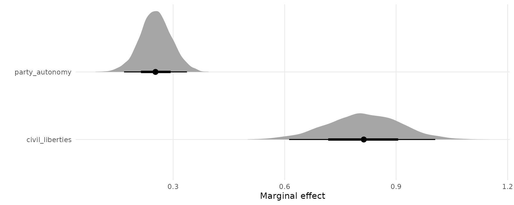
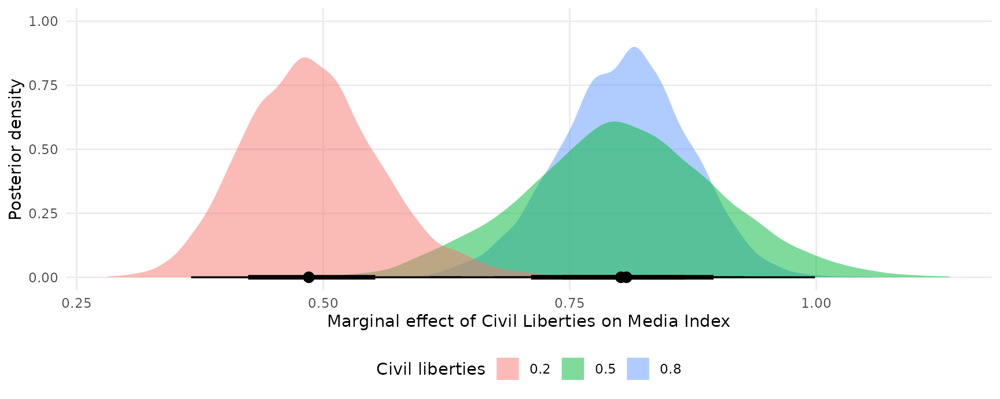
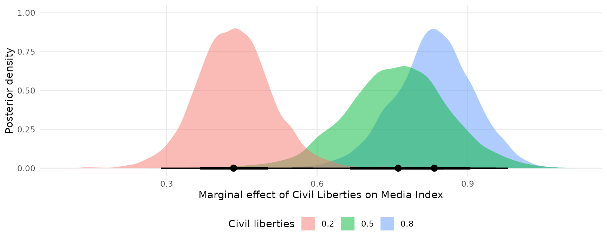
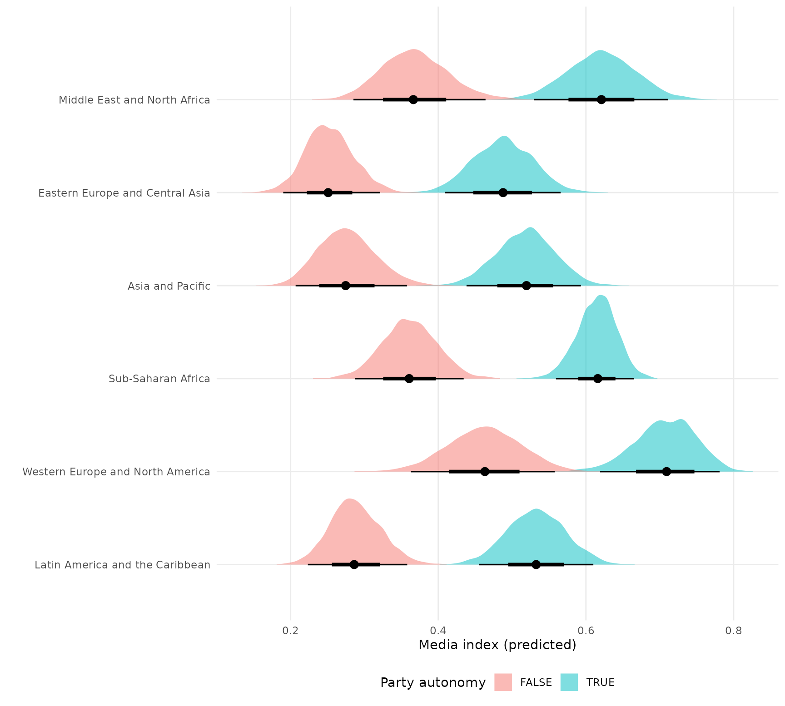

The marginaleffects package offers convenience functions to compute and display predictions, contrasts, and marginal effects from bayesian models estimated by the brms package. To compute these quantities, marginaleffects relies on workshorse functions from the brms package to draw from the posterior distribution. The type of draws used is controlled by using the type argument of the predictions or marginaleffects functions:
-
type = "response": Compute posterior draws of the expected value using thebrms::posterior_epredfunction. -
type = "link": Compute posterior draws of the linear predictor using thebrms::posterior_linpredfunction. -
type = "prediction": Compute posterior draws of the posterior predictive distribution using thebrms::posterior_predictfunction.
The predictions and marginaleffects functions can also pass additional arguments to the brms prediction functions via the ... ellipsis. For example, if mod is a mixed-effects model, then this command will compute 10 draws from the posterior predictive distribution, while ignoring all group-level effects:
predictions(mod, type = "prediction", ndraws = 10, re_formula = NA)See the brms documentation for a list of available arguments:
?brms::posterior_epred
?brms::posterior_linpred
?brms::posterior_predictNote that support for brms will be available in version 0.3.0 of marginaleffects. Until that version is released on CRAN, it can be installed from the development repository:
Logistic regression with multiplicative interactions
Load libraries and download data on passengers of the Titanic from the Rdatasets archive:
library(brms)
library(marginaleffects)
library(ggplot2)
library(ggdist)
dat <- read.csv("https://vincentarelbundock.github.io/Rdatasets/csv/carData/TitanicSurvival.csv")
dat$survived <- ifelse(dat$survived == "yes", 1, 0)
dat$woman <- ifelse(dat$sex == "female", 1, 0)Fit a logit model with a multiplicative interaction:
Adjusted predictions
We can compute adjusted predicted values of the outcome variable (i.e., probability of survival aboard the Titanic) using the predictions function. By default, this function calculates predictions for each row of the dataset:
pred <- predictions(mod)
head(pred)
#> rowid type predicted survived woman age passengerClass conf.low
#> 1 1 response 0.9367148 1 1 29.0000 1st 0.9080048
#> 2 2 response 0.8499307 1 0 0.9167 1st 0.7580028
#> 3 3 response 0.9425090 0 1 2.0000 1st 0.9027115
#> 4 4 response 0.5139104 0 0 30.0000 1st 0.4260183
#> 5 5 response 0.9376562 0 1 25.0000 1st 0.9073695
#> 6 6 response 0.2729998 1 0 48.0000 1st 0.2049851
#> conf.high
#> 1 0.9601875
#> 2 0.9272719
#> 3 0.9750517
#> 4 0.5907391
#> 5 0.9598910
#> 6 0.3493500To visualize the relationship between the outcome and one of the regressors, we can plot conditional adjusted predictions with the plot_cap function:
plot_cap(mod, condition = "age")
Compute adjusted predictions for some user-specified values of the regressors, using the newdata argument and the datagrid function:
pred <- predictions(mod,
newdata = datagrid(woman = 0:1,
passengerClass = c("1st", "2nd", "3rd")))
pred
#> rowid type predicted age woman passengerClass conf.low conf.high
#> 1 1 response 0.51568965 29.88113 0 1st 0.42943440 0.5944791
#> 2 2 response 0.93654281 29.88113 1 1st 0.90760235 0.9596766
#> 3 3 response 0.20236771 29.88113 0 2nd 0.15332668 0.2600200
#> 4 4 response 0.77774931 29.88113 1 2nd 0.71712934 0.8376075
#> 5 5 response 0.08752982 29.88113 0 3rd 0.06445743 0.1126664
#> 6 6 response 0.57058108 29.88113 1 3rd 0.49456218 0.6386165The posteriordraws function samples from the posterior distribution of the model, and produces a data frame with drawid and draw columns.
pred <- posteriordraws(pred)
head(pred)
#> type rowid_internal drawid draw rowid predicted age woman
#> 1 response 1 1 0.52529690 1 0.51568965 29.88113 0
#> 2 response 2 1 0.93746205 2 0.93654281 29.88113 1
#> 3 response 3 1 0.21628065 3 0.20236771 29.88113 0
#> 4 response 4 1 0.78895777 4 0.77774931 29.88113 1
#> 5 response 5 1 0.09044445 5 0.08752982 29.88113 0
#> 6 response 6 1 0.57393112 6 0.57058108 29.88113 1
#> passengerClass conf.low conf.high
#> 1 1st 0.42943440 0.5944791
#> 2 1st 0.90760235 0.9596766
#> 3 2nd 0.15332668 0.2600200
#> 4 2nd 0.71712934 0.8376075
#> 5 3rd 0.06445743 0.1126664
#> 6 3rd 0.49456218 0.6386165This “long” format makes it easy to plots results:
ggplot(pred, aes(x = draw, fill = factor(woman))) +
geom_density() +
facet_grid(~ passengerClass, labeller = label_both) +
labs(x = "Predicted probability of survival", y = "", fill = "Woman")Marginal effects
Use marginaleffects() to compute marginal effects (slopes of the regression equation) for each row of the dataset, and use summary() to compute “Average Marginal Effects”, that is, the average of all observation-level marginal effects:
mfx <- marginaleffects(mod)
summary(mfx)
#> Average marginal effects
#> Term Contrast Effect 2.5 % 97.5 %
#> 1 passengerClass 2nd - 1st -0.235956 -0.32007 -0.156301
#> 2 passengerClass 3rd - 1st -0.388341 -0.47015 -0.306879
#> 3 age dydx -0.005243 -0.00798 -0.002641
#> 4 woman dydx 0.365097 0.28983 0.442951
#>
#> Model type: brmsfit
#> Prediction type: responseCompute marginal effects with some regressors fixed at user-specified values, and other regressors held at their means:
marginaleffects(mod,
newdata = datagrid(woman = 1,
passengerClass = "1st"))
#> rowid type term contrast dydx conf.low
#> 1 1 response woman dydx 0.1558569398 0.109154318
#> 2 1 response age dydx -0.0002403896 -0.001433543
#> 3 1 response passengerClass 2nd - 1st -0.1571905715 -0.219738309
#> 4 1 response passengerClass 3rd - 1st -0.3653685661 -0.431374870
#> conf.high age woman passengerClass
#> 1 0.2073533988 29.88113 1 1st
#> 2 0.0008290449 29.88113 1 1st
#> 3 -0.1018826571 29.88113 1 1st
#> 4 -0.2913956075 29.88113 1 1stCompute and plot conditional marginal effects:
plot_cme(mod, effect = "woman", condition = "age")
The posteriordraws produces a dataset with drawid and draw columns:
draws <- posteriordraws(mfx)
dim(draws)
#> [1] 16736000 14
head(draws)
#> type rowid_internal drawid draw rowid term contrast dydx
#> 1 response 1 1 0.14956203 1 woman dydx 0.15263787
#> 2 response 2 1 0.18092896 2 woman dydx 0.13578765
#> 3 response 3 1 0.06561394 3 woman dydx 0.05887119
#> 4 response 4 1 0.65138481 4 woman dydx 0.65423369
#> 5 response 5 1 0.13533020 5 woman dydx 0.13789463
#> 6 response 6 1 0.71586568 6 woman dydx 0.70741791
#> conf.low conf.high survived woman age passengerClass
#> 1 0.10616029 0.20331617 1 1 29.0000 1st
#> 2 0.02158387 0.27594811 1 0 0.9167 1st
#> 3 0.02558610 0.09798099 0 1 2.0000 1st
#> 4 0.57083326 0.73883135 0 0 30.0000 1st
#> 5 0.09488790 0.18638211 0 1 25.0000 1st
#> 6 0.58308031 0.84052092 1 0 48.0000 1stWe can use this dataset to plot our results. For example, to plot the posterior density of the marginal effect of age when the woman variable is equal to 0 or 1:
mfx <- marginaleffects(mod,
variables = "age",
newdata = datagrid(woman = 0:1)) |>
posteriordraws()
ggplot(mfx, aes(x = draw, fill = factor(woman))) +
stat_halfeye(slab_alpha = .5) +
labs(x = "Marginal Effect of Age on Survival",
y = "Posterior density",
fill = "Woman")
Random effects model
This section replicates some of the analyses of a random effects model published in Andrew Heiss’ blog post: “A guide to correctly calculating posterior predictions and average marginal effects with multilievel Bayesian models.” The objective is mainly to illustrate the use of marginaleffects. Please refer to the original post for a detailed discussion of the quantities computed below.
Load libraries and download data:
library(brms)
library(ggdist)
library(patchwork)
library(marginaleffects)
vdem_2015 <- read.csv("https://github.com/vincentarelbundock/marginaleffects/raw/main/data-raw/vdem_2015.csv")
head(vdem_2015)
#> country_name country_text_id year region
#> 1 Mexico MEX 2015 Latin America and the Caribbean
#> 2 Suriname SUR 2015 Latin America and the Caribbean
#> 3 Sweden SWE 2015 Western Europe and North America
#> 4 Switzerland CHE 2015 Western Europe and North America
#> 5 Ghana GHA 2015 Sub-Saharan Africa
#> 6 South Africa ZAF 2015 Sub-Saharan Africa
#> media_index party_autonomy_ord polyarchy civil_liberties party_autonomy
#> 1 0.837 3 0.631 0.704 TRUE
#> 2 0.883 4 0.777 0.887 TRUE
#> 3 0.956 4 0.915 0.968 TRUE
#> 4 0.939 4 0.901 0.960 TRUE
#> 5 0.858 4 0.724 0.921 TRUE
#> 6 0.898 4 0.752 0.869 TRUEFit a basic model:
mod <- brm(
bf(media_index ~ party_autonomy + civil_liberties + (1 | region),
phi ~ (1 | region)),
data = vdem_2015,
family = Beta(),
control = list(adapt_delta = 0.9))Posterior predictions
To compute posterior predictions for specific values of the regressors, we use the newdata argument and the datagrid function. We also use the type argument to compute two types of predictions: accounting for residual (observation-level) residual variance (prediction) or ignoring it (response).
pred <- predictions(mod,
type = c("response", "prediction"),
newdata = datagrid(party_autonomy = c(TRUE, FALSE),
civil_liberties = .5,
region = "Middle East and North Africa"))
pred
#> rowid type predicted party_autonomy civil_liberties
#> 1 1 response 0.6235402 TRUE 0.5
#> 2 2 response 0.3696945 FALSE 0.5
#> 3 1 prediction 0.6442925 TRUE 0.5
#> 4 2 prediction 0.3573478 FALSE 0.5
#> region conf.low conf.high
#> 1 Middle East and North Africa 0.52552002 0.7111463
#> 2 Middle East and North Africa 0.28378425 0.4604995
#> 3 Middle East and North Africa 0.25974732 0.9739419
#> 4 Middle East and North Africa 0.01565063 0.7313500Extract posterior draws and plot them:
pred <- posteriordraws(pred)
ggplot(pred, aes(x = draw, fill = party_autonomy)) +
stat_halfeye(alpha = .5) +
facet_wrap(~ type) +
labs(x = "Media index (predicted)",
y = "Posterior density",
fill = "Party autonomy")
Marginal effects and contrasts
As noted in the Marginal Effects vignette, there should be one distinct marginal effect for each combination of regressor values. Here, we consider only one combination of regressor values, where region is “Middle East and North Africa”, and civil_liberties is 0.5. Then, we calculate the mean of the posterior distribution of marginal effects:
mfx <- marginaleffects(mod,
newdata = datagrid(civil_liberties = .5,
region = "Middle East and North Africa"))
mfx
#> rowid type term contrast dydx conf.low conf.high
#> 1 1 response party_autonomy TRUE - FALSE 0.2513015 0.1714014 0.3341627
#> 2 1 response civil_liberties dydx 0.8143282 0.6297992 1.0105056
#> party_autonomy civil_liberties region
#> 1 TRUE 0.5 Middle East and North Africa
#> 2 TRUE 0.5 Middle East and North AfricaUse the posteriordraws() to extract draws from the posterio distribution of marginal effects, and plot them:
mfx <- posteriordraws(mfx)
ggplot(mfx, aes(x = draw, y = term)) +
stat_halfeye() +
labs(x = "Marginal effect", y = "")
Plot marginal effects, conditional on a regressor:
plot_cme(mod,
effect = "civil_liberties",
condition = "party_autonomy")
Continuous predictors
pred <- predictions(mod,
newdata = datagrid(party_autonomy = FALSE,
region = "Middle East and North Africa",
civil_liberties = seq(0, 1, by = 0.05))) |>
posteriordraws()
ggplot(pred, aes(x = civil_liberties, y = draw)) +
stat_lineribbon() +
scale_fill_brewer(palette = "Reds") +
labs(x = "Civil liberties",
y = "Media index (predicted)",
fill = "")
The slope of this line for different values of civil liberties can be obtained with:
mfx <- marginaleffects(mod,
newdata = datagrid(civil_liberties = c(.2, .5, .8),
party_autonomy = FALSE,
region = "Middle East and North Africa"),
variables = "civil_liberties")
mfx
#> rowid type term contrast dydx conf.low conf.high
#> 1 1 response civil_liberties dydx 0.4906001 0.3598380 0.6269113
#> 2 2 response civil_liberties dydx 0.8076631 0.6204657 0.9971718
#> 3 3 response civil_liberties dydx 0.8039389 0.6758517 0.9263386
#> civil_liberties party_autonomy region
#> 1 0.2 FALSE Middle East and North Africa
#> 2 0.5 FALSE Middle East and North Africa
#> 3 0.8 FALSE Middle East and North AfricaAnd plotted:
mfx <- posteriordraws(mfx)
ggplot(mfx, aes(x = draw, fill = factor(civil_liberties))) +
stat_halfeye(slab_alpha = .5) +
labs(x = "Marginal effect of Civil Liberties on Media Index",
y = "Posterior density",
fill = "Civil liberties")
The marginaleffects function can use the ellipsis (...) to push any argument forward to the posterior_predict function. This can alter the types of predictions returned. For example, the re_formula=NA argument of the posterior_predict.brmsfit method will compute marginaleffects without including any group-level effects:
mfx <- marginaleffects(mod,
newdata = datagrid(civil_liberties = c(.2, .5, .8),
party_autonomy = FALSE,
region = "Middle East and North Africa"),
variables = "civil_liberties",
re_formula = NA) |>
posteriordraws()
ggplot(mfx, aes(x = draw, fill = factor(civil_liberties))) +
stat_halfeye(slab_alpha = .5) +
labs(x = "Marginal effect of Civil Liberties on Media Index",
y = "Posterior density",
fill = "Civil liberties")
Global grand mean
pred <- predictions(mod,
re_formula = NA,
newdata = datagrid(party_autonomy = c(TRUE, FALSE))) |>
posteriordraws()
mfx <- marginaleffects(mod,
re_formula = NA,
variables = "party_autonomy") |>
posteriordraws()
plot1 <- ggplot(pred, aes(x = draw, fill = party_autonomy)) +
stat_halfeye(slab_alpha = .5) +
labs(x = "Media index (Predicted)",
y = "Posterior density",
fill = "Party autonomy")
plot2 <- ggplot(mfx, aes(x = draw)) +
stat_halfeye(slab_alpha = .5) +
labs(x = "Contrast: Party autonomy TRUE - FALSE",
y = "",
fill = "Party autonomy")
# combine plots using the `patchwork` package
plot1 + plot2
Region-specific predictions and contrasts
Predicted media index by region and level of civil liberties:
pred <- predictions(mod,
newdata = datagrid(region = vdem_2015$region,
party_autonomy = FALSE,
civil_liberties = seq(0, 1, length.out = 100))) |>
posteriordraws()
ggplot(pred, aes(x = civil_liberties, y = draw)) +
stat_lineribbon() +
scale_fill_brewer(palette = "Reds") +
facet_wrap(~ region) +
labs(x = "Civil liberties",
y = "Media index (predicted)",
fill = "")
Predicted media index by region and level of civil liberties:
pred <- predictions(mod,
newdata = datagrid(region = vdem_2015$region,
civil_liberties = c(.2, .8),
party_autonomy = FALSE)) |>
posteriordraws()
ggplot(pred, aes(x = draw, fill = factor(civil_liberties))) +
stat_halfeye(slab_alpha = .5) +
facet_wrap(~ region) +
labs(x = "Media index (predicted)",
y = "Posterior density",
fill = "Civil liberties")
Predicted media index by region and party autonomy:
pred <- predictions(mod,
newdata = datagrid(region = vdem_2015$region,
party_autonomy = c(TRUE, FALSE),
civil_liberties = .5)) |>
posteriordraws()
ggplot(pred, aes(x = draw, y = region , fill = party_autonomy)) +
stat_halfeye(slab_alpha = .5) +
labs(x = "Media index (predicted)",
y = "",
fill = "Party autonomy")
TRUE/FALSE contrasts (marginal effects) of party autonomy by region:
mfx <- marginaleffects(mod,
variables = "party_autonomy",
newdata = datagrid(region = vdem_2015$region,
civil_liberties = .5)) |>
posteriordraws()
ggplot(mfx, aes(x = draw, y = region , fill = party_autonomy)) +
stat_halfeye(slab_alpha = .5) +
labs(x = "Media index (predicted)",
y = "",
fill = "Party autonomy")
Hypothetical groups
We can also obtain predictions or marginal effects for a hypothetical group instead of one of the observed regions. To achieve this, we create a dataset with NA in the region column. Then, we call the marginaleffects or predictions functions with the re_formula=NA argument. This argument is pushed through via the ellipsis (...) to the posterior_epred function of the brms package:
dat <- data.frame(civil_liberties = .5,
party_autonomy = FALSE,
region = NA)
mfx <- marginaleffects(
mod,
variables = "party_autonomy",
re_formula = NA,
newdata = dat)
draws <- posteriordraws(mfx)
ggplot(draws, aes(x = draw)) +
stat_halfeye() +
labs(x = "Marginal effect of party autonomy in a generic world region", y = "")
Multinomial logit
Fit a model with categorical outcome (heating system choice in California houses) and logit link:
dat <- "https://vincentarelbundock.github.io/Rdatasets/csv/Ecdat/Heating.csv"
dat <- read.csv(dat)
mod <- brm(depvar ~ ic.gc + oc.gc,
data = dat,
family = categorical(link = "logit"))Adjusted predictions
Compute predicted probabilities for each level of the outcome variable:
pred <- predictions(mod)
head(pred)
#> rowid type group predicted depvar ic.gc oc.gc conf.low conf.high
#> 1 1 response ec 0.06659842 gc 866.00 199.69 0.04376748 0.09304171
#> 2 2 response ec 0.07737528 gc 727.93 168.66 0.05816855 0.09722480
#> 3 3 response ec 0.10421315 gc 599.48 165.58 0.05835150 0.15288650
#> 4 4 response ec 0.06369851 er 835.17 180.88 0.04490302 0.08214697
#> 5 5 response ec 0.07499714 er 755.59 174.91 0.05569161 0.09318686
#> 6 6 response ec 0.07177546 gc 666.11 135.67 0.04609847 0.10402660Extract posterior draws and plot them:
draws <- posteriordraws(pred)
ggplot(draws, aes(x = draw, fill = group)) +
geom_density(alpha = .2, color = "white") +
labs(x = "Predicted probability",
y = "Density",
fill = "Heating system")
Use the plot_cap function to plot conditional adjusted predictions for each level of the outcome variable gear, conditional on the value of the mpg regressor:
plot_cap(mod, condition = "oc.gc") +
facet_wrap(~ group) +
labs(y = "Predicted probability")
Marginal effects
mfx <- marginaleffects(mod)
summary(mfx)
#> Average marginal effects
#> Group Term Contrast Effect 2.5 % 97.5 %
#> 1 ec ic.gc dydx -1.793e-04 -4.009e-04 2.201e-05
#> 2 er ic.gc dydx 1.501e-05 -2.217e-04 2.436e-04
#> 3 gc ic.gc dydx 1.538e-05 -3.900e-04 4.082e-04
#> 4 gr ic.gc dydx 3.932e-05 -2.415e-04 3.209e-04
#> 5 hp ic.gc dydx 1.090e-04 -7.075e-05 2.992e-04
#> 6 ec oc.gc dydx 4.732e-04 -4.185e-04 1.429e-03
#> 7 er oc.gc dydx -1.018e-03 -2.084e-03 -4.356e-06
#> 8 gc oc.gc dydx 1.053e-03 -7.129e-04 2.847e-03
#> 9 gr oc.gc dydx 8.980e-05 -1.164e-03 1.303e-03
#> 10 hp oc.gc dydx -5.785e-04 -1.449e-03 2.169e-04
#>
#> Model type: brmsfit
#> Prediction type: response